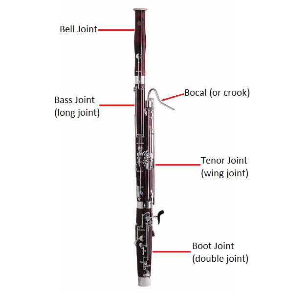

The Bassoon
The bassoon is a member of the woodwind family and is closely related to the oboe in that it uses a double reed. Its warm tone and low register makes it ideal for carrying lower melodies like the one that opens Stravinsky's The Rite of Spring. Due to the difficulty of playing it, the bassoon is often learned after starting on another woodwind instrument such as flute or clarinet. In the orchestra, the bassoon will either sit in the back or the middle row, usually off to the side with the other low voices.
Jokes
Why did the chicken cross the road?
To get away from the bassoon recital.